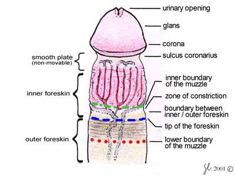
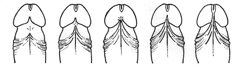
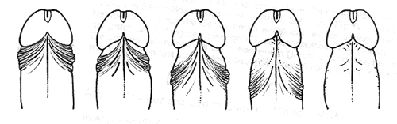
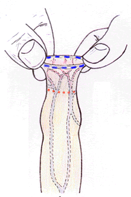
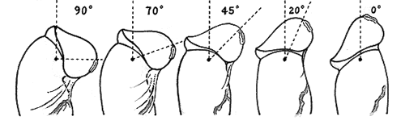
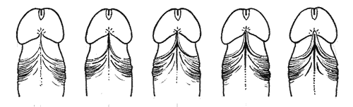
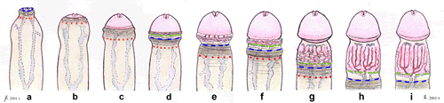
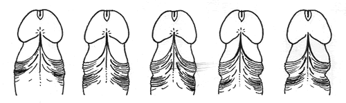

FRENULUM RESEARCH
Frenulum praeputii assessment query
Philips Original Questionnaire
(2014 note : At present no-one can process answers)
Please help us establish the "normal" boundaries of the
frenulums anatomy - how short does a frenulum have to be, to be
diagnosed frenulum breve?
At present even those boys with a frenulum which could be diagnosed
before puberty as being painful during erection, will not get treatment
until after the youth starts to complain of pain, which may be as late
as adulthood.
The practical problem is that pain is experienced on the erect
penis, however doctors can only monitor the flaccid penis. We need
to know which effects on the erect penis are caused by which degrees
of brevity on the flaccid penis.
Most valuable and even essential - for research and to inform a medical profession about which frenulum types result in which erectile deformities (for my diagnosis as well). We need pictures of the flaccid penis of your frenulum from underneath the glans,
and a picture sidewards with the foreskin retracted (ie. what a doctor sees)
and then a picture sidewards of the erect
penis (all pictures with foreskin retracted). Obviously a basic description of the erectile effects and any extra info or pictures would be welcome and
helpful.
Doctors would then be able to advise parents and children of the
potential problems, whether the frenulum will inevitably be painful
or rip; or whether it is a borderline case; or indeed if this is
safe and normal; or maybe even one of those lucky lengths which
will provide extra pleasure.
for diagnosis purposes a description of the erectile effects
is more useful than this questionnaire
Frenulum praeputii assessment query
contributed with many thanks to Philip
(who I lost touch with - please get in touch)
Frenulum Breve depends on the interplay between frenulum and foreskin
while the penis is erect. The structure of the frenulum is also
important as this influences whether it may rip.
Unfortunately there are neither comparative nor statistical studies
on the frenulum and its relationship with the foreskin. Thus there
is currently no true medical knowledge neither about the anatomical
norm nor about the anatomic boundaries within which the interplay
of frenulum and foreskin is a normal and unproblematic one.
There are a lot of important questions still unanswered:
The scope of this questionnaire is to distinguish which lengths
and structures have which effects
Although the list of queries below seems already too long, it
may still be incomplete and thus not include some aspect of a particular
type of frenulum, but since this kind of study has never been done
before no-one knows what the outcome will be. If you come across
a question which doesn’t include your case please feel free to write
us any additional remarks.
Please help provide information which will serve as guidelines
for further scientific enquiry.
Answer on a separate page. To help you fill in the question form,
here is a picture of the anatomy of the penis with the names of
its parts. Several questions are also accompanied by pictures so
you know what is meant by each answer possibility.

1. Age
2. Nationality
3. Race
a - Caucasian
b - Asian
c - Negroid
d - Old Mixture - Turkmene
e - Old Mixture - Aethiopian
f - Newer Mixtures - mulatto, mestizo, etc (Please state what!)
4. Penis status
a - I was never operated on the penis.
b - I was operated on the penis due to ... (state the reason)
5. Foreskin status
a - My foreskin is intact
b - My foreskin is intact, but I went through a stretching procedure.
c - I had a preputioplasty i.e. several small parallel incisions
which were then sewed vertically or Z-plasty or Y-plasty
d - I had a dorsal slit
e - I had a partial circumcision
f - I had full circumcision. Please state what sort : Low and loose
- Low and tight - High and loose - High and tight
6. Did the frenulum rip during intercourse
- please state how many years have passed since.
a - My frenulum is intact
b - My frenulum ripped, but healed well with no change.
c - My frenulum ripped once/several times and thus got shorter.
d - and thus got longer, since the cut healed e.g. not vertically
but horizontally i.e. stretched.
e - My frenulum ripped once/several times during intercourse and
got medical attention, please state what happened.
My frenulum ripped for another reason and not during sexual intercourse
- please state what happened.
7. Was the frenulum operated? Yes/No
State how many years have passed since.
a - I had a frenular incision: simple cut through thin, membranous
ridge of frenulum and no stitches Tiny flaps of skin !
b - I had a frenuloplasty : simple cut through frenulum, horizontal
stretching and several stitches. No flaps of skin !
c - I had a frenuloplasty : Z-plasty or Y-plasty
d - I had a partial frenulotomy e.g. my frenulum was cut away at
its thinner, more membranous part near the glans
e - I had a frenulotomy where the frenulum was completely cut out.
8. Personally do have the feeling that there is
something which is not entirely correct with either your foreskin
or your frenulum ?
9. Are you able to draw back your foreskin past the glans without any difficulties when your penis is in its
erect state ? What happens when you let go ?
Measurements would be best in the international language of
cms. and mms.
A strip of cardboard or plastic can be very useful for taking
measurements. Rather than positioning rulers along your penis,
use a strip of flexible plastic or cardboard, pinch off the measurement
and then hold against a ruler. |
10. Length of flaccid penis = length of penis, when it
is completely flaccid and in its shortest size. During the measurement
you should be standing and holding your penis at a 90° angle to
your body when you are measuring it. Press ruler against pubic bone
and measure from penis base to tip, though disregarding overhanging
foreskin.
11. Length of erect penis = length of penis, when it is
erect to its maximum. During the measurement you should be standing
and holding your penis at a 90° angle to your body. Press a ruler
against pubic bone and measure from penis base to tip of glans.
12. Frenulums upper point = point where the frenulum attaches
to the glans or nearest to this. The best way to find this point
is to hold the glans between thumb and forefinger of your left hand,
turn it around so you can see its underside and gently move the
frenulum from one side to the other so that it stretches slightly
sideways and you actually can see where it exactly starts. Although
it makes no difference if you asses this point when your penis is
flaccid or erect, the latter may facilitate assessment.

a - at the shaft of penis i.e. below the sulcus coronus
b - at the sulcus coronus i.e. the constriction below the glans
c - at the lower edge of the glans i.e. corona glandis
d - at mid glans i.e. between corona glandis and meatus
e - at the meatus
13. Frenulums lower point = point where the frenulum attaches
itself to the foreskin or to the shaft of the penis. In order to
assess this first pull your foreskin back down the shaft of the
penis, preferably in its erect state, so that the frenulum is a
bit overstretched and tense and turns whitish. Look for the point
where the frenulum splits up like a root into three or more branches,
and thus goes over into the foreskin. If you are able to completely
retract your foreskin on the shaft of the penis you may not see
any branching out or splicing of the frenulum at all. The frenulum
just smoothly goes over into the raphe. None the less, even in this
case there is usually a definite point where the frenulum stops
having its whitish appearance and completely looses its prominence.

a - at the base of glans
b - 15mm. behind the glans
c - 30mm behind the glans
d - 45mm behind the glans
e - 60mm. behind the glans
14. Length of frenulum = length of the frenulum along the
ridge - from its upper point to its lower point when erect.
15. Length of frenulum = length of the frenulum along the
ridge - from its upper point to its lower point when flaccid.
16. Length of the inner foreskin leftover between
the end of frenular ridge to the join of inner and outer foreskin.
17. Can you pull the foreskin forward?
18. Pull the foreskin forward from underneath, at the join
of inner and outer foreskin - Measure the distance inside, from
the join of inner and outer foreskin to the glans.
|
 |
19. Degree of bending of the glans when you pull the foreskin
completely back while in the flaccid state. Hold the completely
stretched foreskin with your left hand at base of penis, turning
the penis around its axis by 90° so that you can see your frenulum
sideways. Measure angle between the imaginary line of the penis
shafts axis and a line that goes through the meatus. The pictures
below may help you in doing the correct measurement.

Please state approx. how many degrees.
20. Prominence of the frenulum = When the penis is erect
and the foreskin stretched to its maximum without bending the glans,
how high is the frenulums bridging at the sulcus ?
The sequence of pictures below may help you in making the correct
measurement.

a - 1 mm
b - 3 mm
c - 5 mm
d - 7 mm
e - 9 mm
21. Thickness of the frenulum = With your penis in a flaccid
state and turned around its axis by 90° so that you can see your
frenulum sideways, draw your foreskin back past the glans holding
it with your left hand if necessary, and than with the thumb and
index of your right hand pull your frenulum at its base away from
shaft and so that it stretches a bit out vertically to the shaft.
If it is thin enough you may see a lot of small red capillaries
shinning through the translucent membranous frenulum. Measure thickness
of frenulum with a ruler in mm.

a - less then 1 mm
b - 1 mm
c - 2 mm
d - 3 mm
e - more then 3 mm
Does your frenulum have blood capillaries (veins or arteries) running through it?
22. Tension on the frenulum when the penis is erect and
the foreskin drawn back past glans. Try to ascertain the tension
by tipping the frenulum slightly with your forefinger at its most
prominent site - usually its bridging part between glans and shaft.
a - No tension : frenulum feels smooth and can be pressed in.
b - Little tension : frenulum feels smooth but can’t be pressed.
c - Definite tension : frenulum is paler and feels stretched.
d - A lot of tension : frenulum is whitish and is really taunt.
e - Extreme tension : frenulum is white, really taunt and hurts.
Can you localise exactly where the pain or pleasure come from, i.e. from the connection with the glans, with the foreskin, in the frenulum itself?.
23. While stretching the frenulum out, can you see a stringlike, larger brim or hem at the edge or is the brim
normal i.e. a simple sheet of skin.
yes - stringlike, enlarged brim or hem
no - normal brim
24. Maximum extent to which you can pull your foreskin back in the erect state without any bending of the glans. On the upper
side of the penis measure the gap between glans tip of glans to
foreskin, if you can retract behind the glans measure the distance
from the glans brim till where it starts making fine pleas, or if
no pleas are visible from glans until the outer foreskin (the dotted
blue line).

25. Type of glans covering : When Flaccid without bending
the glans
26. Constriction Zone or Phimotic ring : With your penis
in the erect state and the foreskin drawn back past glans so that
the frenulum is stretched but not over stretched i.e. the glans
should be bent not even a bit. If you are not sure how much you
should stretch, it is better to stretch less,
If you look at the zone at the shaft of penis where the prepuce
is most constricted. You may recognise a phimotic ring
a - No constriction zone is observable
b - A very slight constriction i.e. silhouette of penis shaft shows
a 1 mm indent on each side.
c - A slight constriction i.e. silhouette of penis shaft shows
a 2 mm indent on each side.
d - A definite constriction i.e. silhouette of penis shaft shows
a 3 mm indent on each side.
e - A bigger constriction i.e. silhouette of penis shaft shows
more then 3 mm indent on each side

____________________________________________________
ANSWERS
Please send your answers (and suggestions for this questionnaire)
by email to
my contact address or post direct on the central forum
(2014 note : At present no-one can process answers)
__________________________
Example of an answering sheet :
1. 25
2. Italian (50%) ; German (50%)
3. caucasian
4. a
5. a
6. a
7. no
8. yes
9. yes but when I let go it slides forward again
10 10cm
11. 19cm.
12. d mid glans
13 b 20mm back
14 3cm
15 2.5cm
16 15mm
17 yes
18 5cm
19 90 degrees
20 d 6mm
21 2mm
22 d
23 yes
24 d
25 f
26 b
Additional remarks : ........
|